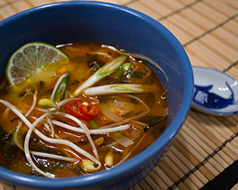
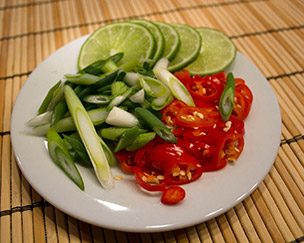
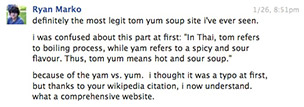

Tom Yum Soup
Tom yum is a spicy clear soup from Thailand. In Thai, tom refers to boiling process, while yam refers to a spicy and sour flavour. Thus, tom yum means hot and sour soup.
Indeed, tom yum is characterised by its distinct hot and sour flavours, with fragrant herbs generously used in the broth. Tom yum is widely served in neighbouring countries such as Malaysia, Singapore and Indonesia, and has been popularised around the world.

Ingredients
- 4 cups water
- 1 stalk lemon grass
- 4 lime leaves
- 1 inch ginger root
- 2 fresh hot chilies
- 3 tbsp fish sauce
- 1 tsp sugar
- 1 1/2 tsp chili paste
- 2 oz button mushrooms
- 16 large shrimp
- 3 tbsp lime juice
- fresh coriander leaves

Directions
- Heat 4 cups water in a soup pot to boiling.
- Slice up the lime leaves and the ginger.
- Crush the chilies and lemon grass.
- When the water has boiled, add all these ingredients, followed by fish sauce, sugar, and chili paste.
- Add mushrooms, shrimp, and lime juice and lower heat to medium-high.
- Cook until shrimp have turned white. Transfer to serving bowl, and garnish with fresh coriander leaves.
- Enjoy your Tom Yum soup!
Review for Tom Yum Soup Website

Source: Tom Yum Wikipedia